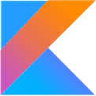

Seznam populárních programovacích jazyků
Nejpopulárnější programovací jazyky
| Jméno | Ikona | Typ | Syntax | Primární využití | Unikátní vlastnost |
|---|---|---|---|---|---|
| Python |
|
Interpretovaný | Dynamická, jednoduchá a čitelná syntaxe | Obecný účel, webové aplikace, vědecké výpočty, umělá inteligence | Silná podpora knihoven a frameworků, což umožňuje rychlý vývoj |
| Java |
|
Kompilovaný (do bytecode, který běží na JVM), ale zároveň i interpretovaný JVM | Podobná syntaxi C++, ale s důrazem na objektově orientované programování | Enterprise aplikace, mobilní aplikace (Android), webové aplikace | Platformová nezávislost díky JVM |
| JavaScript |
|
Interpretovaný | Dynamická a slabě typovaná syntaxe | Webové aplikace (front-end i back-end), mobilní aplikace, desktopové aplikace | Široké použití v prohlížečích, stává se stále populárnějším i mimo prohlížeče díky Node.js |
| C / C++ |
|
C je obvykle kompilovaný, zatímco C++ je kompilovaný, ale také podporuje interpretaci v některých případech. | Pro C podobná jazyku C, pro C++ rozšířená syntaxe s důrazem na objektově orientované programování | Systémové programování, herní vývoj, embedded systémy, vysoký výkon | Úroveň přístupu k paměti, vysoký výkon, široká použitelnost |
| C# |
|
Kompilovaný (do mezikódu, který běží na .NET runtime) | Podobná syntaxi Javy s důrazem na objektově orientované programování | Desktopové aplikace, webové aplikace, hry, mobilní aplikace (především s Xamarinem) | Integrace s .NET frameworkem, podpora pro různé platformy pomocí .NET Standard |
Méně populární programovací jazyky
| Jméno | Ikona | Typ | Syntax | Primární využití | Unikátní vlastnost |
|---|---|---|---|---|---|
| Rust |
|
Kompilovaný | Staticky typovaná s důrazem na bezpečnost a výkon | Systémové programování, vysoký výkon, paralelní a asynchronní programování | Bezpečnostní mechanismy zabudované do jazyka, jako je například "borrow checker" |
| Haskell |
|
Kompilovaný | Funkcionální, silně typovaná syntaxe s důrazem na čistotu funkcí | Funkcionální programování, matematické výpočty, akademický výzkum | Použití lenivého vyhodnocování a silné podpory pro monády |
| Kotlin |  | Kompilovaný (do bytecode, který běží na JVM nebo jako nativní kód) | Podobná syntaxi Javy s množstvím moderních funkcí | Android vývoj, serverový vývoj, multiplatformní vývoj | 100% interoperabilita s Javou, moderní jazykové prvky jako rozšíření pro Android vývojáře |
| Swift |
|
Kompilovaný | Moderní syntaxe s důrazem na bezpečnost a výkon | Vývoj aplikací pro iOS, macOS, watchOS, tvOS | Bezpečnostní prvky jako optionals, type inference, vysoký výkon díky optimalizacím kompilátoru |
| Elixir |
|
Interpretovaný (bez nutnosti předkompilace) | Funkcionální, dynamicky typovaná syntaxe podobná jazyku Ruby | Paralelní a distribuované programování, webové aplikace | Použití actor modelu a schopnost efektivního zpracování paralelních úloh pomocí Erlang VM. |